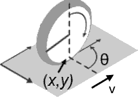

Unicycle
The Unicycle benchmark models a unicycle vehicle [AKM17].

using ClosedLoopReachability
import OrdinaryDiffEq, Plots, DisplayAs
using ReachabilityBase.CurrentPath: @current_path
using ReachabilityBase.Timing: print_timed
using ClosedLoopReachability: UniformAdditivePostprocessing
using Plots: plot, plot!, lens!, bboxModel
There are 4 state variables $(x_1, x_2, x_3, x_4)$, where $(x_1, x_2)$ describe the $x$ and $y$ coordinates in the plane, $x_3$ is the velocity, and $x_4$ is the steering angle. The dynamics are given as follows:
\[\begin{aligned} \dot{x}_1 &= x_4 \cos(x_3) \\ \dot{x}_2 &= x_4 \sin(x_3) \\ \dot{x}_3 &= u_2 \\ \dot{x}_4 &= u_1 + w \end{aligned}\]
where $w$ is a bounded error in the range $[−10^{−4}, 10^{−4}]$, which we model as a nondeterministically assigned constant for simplicity.
vars_idx = Dict(:states => 1:4, :disturbances => [5], :controls => 6:7)
@taylorize function Unicycle!(dx, x, p, t)
x₁, x₂, x₃, x₄, w, u₁, u₂ = x
dx[1] = x₄ * cos(x₃)
dx[2] = x₄ * sin(x₃)
dx[3] = u₂
dx[4] = u₁ + w
dx[5] = zero(x[5])
dx[6] = zero(x[6])
dx[7] = zero(x[7])
return dx
end;We are given a neural-network controller with 1 hidden layer of 500 neurons and ReLU activations in all layers, including the output layer. The controller has 4 inputs (the state variables) and 2 outputs ($u_1$ and $u_2$). The output of the neural network $N(x)$ needs to be normalized in order to obtain $u$, namely $(u_1, u_2) = N(x) - (20, 20)$.
path = @current_path("Unicycle", "Unicycle_controller.polar")
controller = read_POLAR(path)
control_postprocessing = UniformAdditivePostprocessing(-20.0);The control period is 0.2 time units.
period = 0.2;Specification
The uncertain initial condition is:
\[x_1 ∈ [9.5,9.55], x_2 ∈ [−4.5,−4.45], x_3 ∈ [2.1,2.11], x_4 ∈ [1.5,1.51]\]
X₀ = Hyperrectangle(low=[9.5, -4.5, 2.1, 1.5, -1e-4],
high=[9.55, -4.45, 2.11, 1.51, 1e-4])
U₀ = ZeroSet(2);The control problem is:
ivp = @ivp(x' = Unicycle!(x), dim: 7, x(0) ∈ X₀ × U₀)
prob = ControlledPlant(ivp, controller, vars_idx, period;
postprocessing=control_postprocessing);The specification is to reach the goal region
\[x_1 ∈ [−0.6,0.6], x_2 ∈ [−0.2,0.2], x_3 ∈ [−0.06,0.06], x_4 ∈ [−0.3,0.3]\]
until a time horizon of 10 time units. A sufficient condition for guaranteed verification is to overapproximate the result at the end with a hyperrectangle.
goal_set = cartesian_product(Hyperrectangle(zeros(4), [0.6, 0.2, 0.06, 0.3]),
Universe(3))
predicate_set(R) = overapproximate(R, Hyperrectangle, tend(R)) ⊆ goal_set
predicate(sol) = all(predicate_set(F[end]) for F in sol if T ∈ tspan(F))
T = 10.0
T_warmup = 2 * period; # shorter time horizon for warm-up runAnalysis
To enclose the continuous dynamics, we use a Taylor-model-based algorithm:
algorithm_plant = TMJets(abstol=1e-1, orderT=3, orderQ=1);To propagate sets through the neural network, we use the DeepZ algorithm. We also use an additional splitting strategy to increase the precision.
algorithm_controller = DeepZ()
splitter = BoxSplitter([3, 1, 7, 1]);The verification benchmark is given below:
function benchmark(; T=T, silent::Bool=false)
# Solve the controlled system:
silent || println("Flowpipe construction:")
res = @timed solve(prob; T=T, algorithm_controller=algorithm_controller,
algorithm_plant=algorithm_plant, splitter=splitter)
sol = res.value
silent || print_timed(res)
# Check the property:
silent || println("Property checking:")
res = @timed predicate(sol)
silent || print_timed(res)
if res.value
silent || println(" The property is satisfied.")
result = "verified"
else
silent || println(" The property may be violated.")
result = "not verified"
end
return sol, result
end;Run the verification benchmark and compute some simulations:
benchmark(T=T_warmup, silent=true) # warm-up
res = @timed benchmark(T=T) # benchmark
sol, result = res.value
@assert (result == "verified") "verification failed"
println("Total analysis time:")
print_timed(res)
println("Simulation:")
res = @timed simulate(prob; T=T, trajectories=5, include_vertices=false)
sim = res.value
print_timed(res);Flowpipe construction:
12.851617 seconds (198.31 M allocations: 9.876 GiB, 23.21% gc time, 0.00% compilation time)
Property checking:
0.095594 seconds (336.24 k allocations: 15.332 MiB, 0.00% compilation time)
The property is satisfied.
Total analysis time:
12.950891 seconds (198.65 M allocations: 9.891 GiB, 23.03% gc time, 0.00% compilation time)
Simulation:
0.811373 seconds (1.90 M allocations: 101.599 MiB, 0.00% compilation time)Results
Preprocess the results:
solz = overapproximate(sol, Zonotope)
Tint = try convert(Int, T) catch; T end;Script to plot the results:
function plot_helper(vars; show_simulation::Bool=true)
fig = plot()
plot!(fig, project(goal_set, vars); color=:cyan, alpha=0.5, lab="goal")
plot!(fig, solz; vars=vars, color=:yellow, lw=0, alpha=1, lab="")
plot!(fig, project(X₀, vars); color=:cornflowerblue, alpha=1, lab="X₀")
lab = "reach set at t = $Tint"
for F in sol
if T ∈ tspan(F)
plot!(fig, overapproximate(F[end], Zonotope, tend(F));
vars=vars, color=:orange, lab=lab)
lab = ""
end
end
if show_simulation
plot_simulation!(fig, sim; vars=vars, color=:black, lab="")
end
return fig
end;Plot the results:
vars = (1, 2)
fig = plot_helper(vars)
plot!(fig; xlab="x₁", ylab="x₂", leg=:bottomleft)
lens!(fig, [9.49, 9.56], [-4.51, -4.44]; inset=(1, bbox(0.65, 0.05, 0.25, 0.25)),
lc=:black, xticks=[9.5, 9.55], yticks=[-4.5, -4.45], subplot=2)
lens!(fig, [0.3, 0.7], [-0.25, 0.25]; inset=(1, bbox(0.1, 0.3, 0.25, 0.25)),
lc=:black, xticks=[0.4, 0.6], yticks=[-0.2, 0.2], subplot=3)
# Plots.savefig(fig, "Unicycle-x1-x2.png") # command to save the plot to a file
fig = DisplayAs.Text(DisplayAs.PNG(fig))vars = (3, 4)
fig = plot_helper(vars; show_simulation=false)
plot!(fig; xlab="x₃", ylab="x₄", leg=:bottom)
lens!(fig, [2.09, 2.12], [1.495, 1.515]; inset=(1, bbox(0.72, 0.54, 0.25, 0.25)),
lc=:black, xticks=[2.1, 2.11], yticks=[1.5, 1.51], subplot=2)
lens!(fig, [-0.1, 0.03], [-0.4, -0.15]; inset=(1, bbox(0.1, 0.1, 0.25, 0.25)),
lc=:black, xticks=[-0.08, 0], yticks=[-0.3, -0.2], subplot=3)
# Plots.savefig(fig, "Unicycle-x3-x4.png") # command to save the plot to a file
fig = DisplayAs.Text(DisplayAs.PNG(fig))